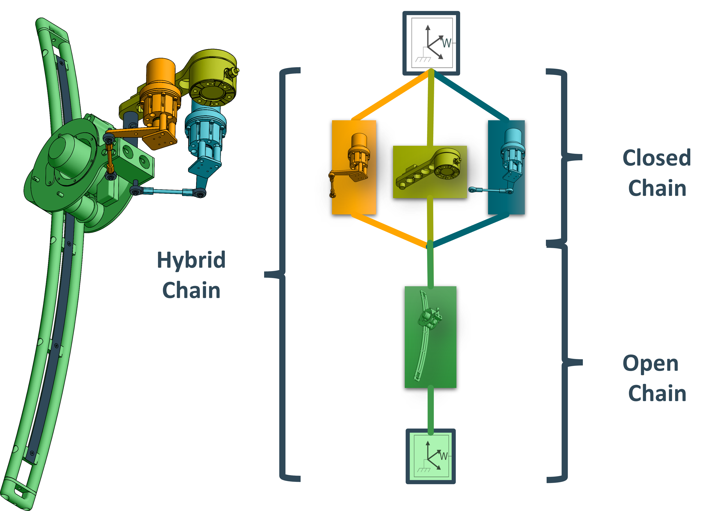
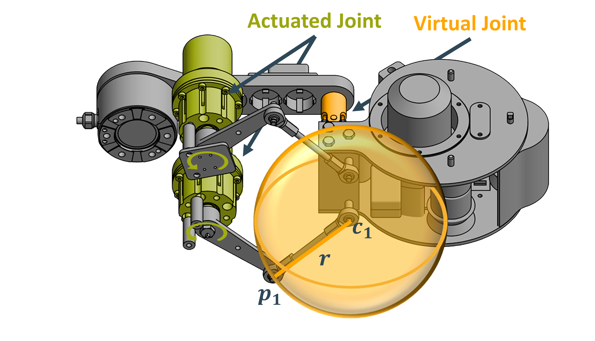

Tutorials¶
Building a Robot Model¶
Before TriPs functionality can be used on a robot, it first has to be build within TriP. This Tutorial will show how to build the TriPed robot shown below:

Here each leg was highlighted in a different color. Since all legs are identicall, this tutorial will start with a single leg. More information about the triped legs can be found here .
The first step in setting up a robot is identifying the groups and transformations. TriP uses Groups to model closed kinematic chains. These are structures where multiple moving parts converge in a single location forming one or more loops. Some examples can be seen down below:
## TODO
These closed chains will either be connected directly to each other or using a series of other moving parts. Such a series is called a open kinematic chain. Open Kinematic chains are handled using a series of transformations.
In the case of the TriPed the following chains can be identified:
This in turn means that the leg of the TriPed contains one kinematic group and a number of transformations representing the open chain.
Once each group has been identified the group construction worklow goes like this:

Building open chains¶
Groups handle closed chains by abstracting them into a virtual open chains that models how group moves combined with two mapping functions from these virtual joints to the actual actuated joints and back. This means that for both the open and the closed chain, a chain has to be build. The precise transformations depend on the type of robot and its conventions. The kinematic transformations of the TriPed are described here: here . This leads to the following virtual open chain:
1 2 3 4 5 | A_CSS_P_trans = Transformation(name='A_CSS_P_trans',
values={'tx': 0.265, 'tz': 0.014})
A_CSS_P_rot = Transformation(name='gimbal_joint',
values={'rx': 0, 'ry': 0, 'rz': 0},
state_variables=['rx', 'ry', 'rz'],
|
And the corresponding transformations for the open chain:
1 2 3 4 5 6 7 8 9 | virtual_to_actuated=gimbal_to_swing)
A_P_LL = Transformation(name='A_P_LL',
values={'tx': 1.640, 'tz': -0.037, },
parent=closed_chain)
A_LL_LL_zero = Transformation(name='zero_angle_convention',
values={'ry': radians(-3)},
parent=A_P_LL)
A_LL_zero_LL_joint = Transformation(name='extend_joint',
|
Note that both chains are made up of transformations without state_variables. Such transformations are ‘static’ and dont represent a joint. It is possible to construct open chains without such transformations (see the denavit hartenberg convention for example). In practice however they are handy to specify the position of a joint at a specified angle. This allows the joint angles to be interpretable. This can be seen with the A_LL_LL_zero transformation. It ensures that a extend_joint angle corresponds to the foot of the leg being completely retracted.
Create Mappings¶
For the kinematic group a mapping from the actuated swing_joints to the virtual gimbal joint have to be provided. These joints can be seen down below:
The mapping between these joints can be computet by solving a geometric closing equation. As pictured above, the tip \(x_i\) the output lever connected to the actuated joints \(i\) alwas intersects the sphere at position \(c_i\) where \(i\) is either 1 or 2.
Mathematically this can be described using:
Where \(rx,ry,rz\) are the rotation around the x, y and z axis and the suberscript :math:`v,~a`denotes the virtual and actuated state respectively.
The virtual_to_actuated and actuated_to_virtual mappings can now be defined as the virtual or actuated state that solves the closure equation assuming the other state as a fixed value. This can be done using casadis nonelinear programming solver. The final code can be seen down below:
1 2 3 4 5 6 7 8 9 10 11 12 13 14 15 16 17 18 19 20 21 22 23 24 25 26 27 28 29 30 31 32 33 34 35 36 37 38 39 40 41 42 43 44 45 46 47 48 49 50 51 52 53 54 55 56 57 58 59 60 61 62 63 64 65 66 67 68 69 70 71 72 73 74 75 76 77 78 79 80 81 82 83 84 85 |
def c(rx, ry, rz):
A_CSS_P_trans = hom_translation_matrix(
t_x=0.265, t_y=0, t_z=0.014)
A_CSS_P_rot = hom_rotation(x_axis_rotation_matrix(rx) @
y_axis_rotation_matrix(ry) @
z_axis_rotation_matrix(rz))
A_P_SPH1_2 = hom_translation_matrix(
t_x=0.015, t_y=0.029, t_z=-0.0965)
A_P_SPH2_2 = hom_translation_matrix(
t_x=0.015, t_y=-0.029, t_z=-0.0965)
A_CSS_P = A_CSS_P_trans @ A_CSS_P_rot
A_c1 = A_CSS_P @ A_P_SPH1_2
A_c2 = A_CSS_P @ A_P_SPH2_2
return get_translation(A_c1), get_translation(A_c2)
def p1(theta):
A_CCS_lsm_tran = hom_translation_matrix(
t_x=0.139807669447128, t_y=0.0549998406976098, t_z=-0.051)
A_CCS_lsm_rot = hom_rotation(z_axis_rotation_matrix(radians(-345.0)))
A_MCS1_JOINT = hom_rotation(z_axis_rotation_matrix(theta))
A_MCS1_SP11 = hom_translation_matrix(
t_x=0.085, t_y=0, t_z=-0.0245)
A_CCS_SP11 = A_CCS_lsm_tran @ A_CCS_lsm_rot @ A_MCS1_JOINT @ A_MCS1_SP11
return get_translation(A_CCS_SP11)
def p2(theta):
A_CCS_rsm_tran = hom_translation_matrix(
t_x=0.139807669447128, t_y=-0.0549998406976098, t_z=-0.051)
A_CCS_rsm_rot = hom_rotation(z_axis_rotation_matrix(radians(-15.0)))
A_MCS2_JOINT = hom_rotation(z_axis_rotation_matrix(theta))
A_MCS2_SP21 = hom_translation_matrix(
t_x=0.085, t_y=0, t_z=-0.0245)
A_CSS_SP21 = A_CCS_rsm_tran @ A_CCS_rsm_rot @ A_MCS2_JOINT @ A_MCS2_SP21
return get_translation(A_CSS_SP21)
def swing_to_gimbal(state: Dict[str, float], tips: Dict[str, float] = None):
x_0 = [0, 0, 0]
if tips:
x_0[2] = tips['rx']
x_0[3] = tips['ry']
x_0[4] = tips['rz']
nlp = {'x': virtual_state, 'f': closing_equation, 'p': actuated_state}
nlp_solver = nlpsol('swing_to_gimbal', 'ipopt', nlp, opts)
solution = nlp_solver(x0=x_0,
p=[state['swing_left'], state['swing_right']])
sol_vector = np.array(solution['x'])
return {'gimbal_joint': {'rx': sol_vector[0][0], 'ry': sol_vector[1][0], 'rz': sol_vector[2][0]}}
def gimbal_to_swing(state: Dict[str, Dict[str, float]], tips: Dict[str, float] = None):
x_0 = [0, 0]
if tips:
x_0[0] = tips['swing_left']
x_0[1] = tips['swing_right']
nlp = {'x': actuated_state, 'f': closing_equation, 'p': virtual_state}
nlp_solver = nlpsol('gimbal_to_swing', 'ipopt', nlp, opts)
solution = nlp_solver(x0=x_0,
p=[state['gimbal_joint']['rx'], state['gimbal_joint']['ry'], state['gimbal_joint']['rz']])
sol_vector = np.array(solution['x'])
return {'swing_left': sol_vector[0][0], 'swing_right': sol_vector[1][0]}
theta_left = SX.sym('theta_left')
theta_right = SX.sym('theta_right')
gimbal_x = SX.sym('gimbal_x')
gimbal_y = SX.sym('gimbal_y')
gimbal_z = SX.sym('gimbal_z')
virtual_state = vertcat(gimbal_x, gimbal_y, gimbal_z)
actuated_state = vertcat(theta_left, theta_right)
opts = {'ipopt.print_level': 0, 'print_time': 0}
r = 0.11
c1, c2 = c(rx=gimbal_x, ry=gimbal_y, rz=gimbal_z)
closing_equation = ((c1-p1(theta_right)).T @ (c1-p1(theta_right)) - r**2)**2+(
|
Building the group¶
Using both the mappings and the virtual open chain, the group can be build:
1 2 3 4 5 |
closed_chain = KinematicGroup(name='closed_chain',
virtual_chain=[A_CSS_P_trans, A_CSS_P_rot],
actuated_state={
'swing_left': 0, 'swing_right': 0},
|
Note that the closed chain specifies no parent since it is located directly at the robots base and the open chain specifies no mappings since these are autogenerated.
Combining groups to a robot¶
The last step is to combine the group and transformations into a robot object:
triped_leg = Robot([closed_chain,A_P_LL,A_LL_LL_zero,A_LL_zero_LL_joint,A_LL_Joint_FCS])
Building the complete robot¶
Since the TriPed has three legs, the above process has to be repeated three times. Each time the joints and actuated state need their own unique names.
Since this would be tedious to do by hand, a function can be written that returns the full transformation of a single leg. This functions then follows the above steps, only appending the initial kinematic group with a transformation to the start position of each leg.
This function can be seen here:
1 2 3 4 5 6 7 8 9 10 11 12 13 14 15 16 17 18 19 20 21 22 23 24 25 26 27 28 29 30 31 32 33 34 35 36 37 38 39 40 41 42 43 44 45 46 47 48 49 50 51 52 53 54 55 56 57 | def leg_model(leg_number: str):
def rename_swing_to_gimbal(swing: Dict[str, float], tips: Dict[str, float] = None):
swing = deepcopy(swing)
swing['swing_left'] = swing[leg_name+'swing_left']
swing['swing_right'] = swing[leg_name+'swing_right']
del swing[leg_name+'swing_left']
del swing[leg_name+'swing_right']
gimbal = swing_to_gimbal(swing, tips)
gimbal[leg_name+'gimbal_joint'] = gimbal['gimbal_joint']
del gimbal['gimbal_joint']
return gimbal
def rename_gimbal_to_swing(gimbal: Dict[str, float], tips: Dict[str, float] = None):
gimbal = deepcopy(gimbal)
gimbal['gimbal_joint'] = gimbal[leg_name+'gimbal_joint']
del gimbal[leg_name+'gimbal_joint']
swing = gimbal_to_swing(gimbal, tips)
swing[leg_name+'swing_left'] = swing['swing_left']
swing[leg_name+'swing_right'] = swing['swing_right']
del swing['swing_left']
del swing['swing_right']
return swing
leg_name = 'leg'+str(leg_number)+'_'
leg_rotation = Transformation(name=leg_name+'leg_rotation',
values={'rz': -1*radians(120)*leg_number})
A_CSS_P_trans = Transformation(name=leg_name+'A_CSS_P_trans',
values={'tx': 0.265, 'tz': 0.014},
parent=leg_rotation)
A_CSS_P_rot = Transformation(name=leg_name+'gimbal_joint',
values={'rx': 0, 'ry': 0, 'rz': 0},
state_variables=['rx', 'ry', 'rz'],
parent=A_CSS_P_trans)
closed_chain = KinematicGroup(name=leg_name+'closed_chain',
virtual_chain=[leg_rotation,
A_CSS_P_trans, A_CSS_P_rot],
actuated_state={
leg_name+'swing_left': 0, leg_name+'swing_right': 0},
actuated_to_virtual=rename_swing_to_gimbal,
virtual_to_actuated=rename_gimbal_to_swing)
A_P_LL = Transformation(name=leg_name+'A_P_LL',
values={'tx': 1.640, 'tz': -0.037, },
parent=closed_chain)
A_LL_LL_zero = Transformation(name=leg_name+'zero_angle_convention',
values={'ry': radians(-3)},
parent=A_P_LL)
A_LL_zero_LL_joint = Transformation(name=leg_name+'extend_joint',
values={'ry': 0},
|
The final TriPed robot can then be build using:
1 2 | A_LL_Joint_FCS = Transformation(name=leg_name+'A_LL_Joint_FCS',
values={'tx': -1.5},
|